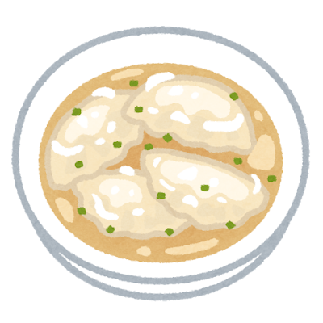
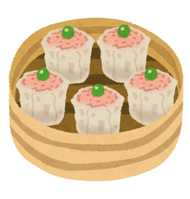
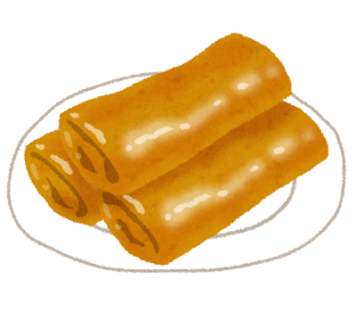

Dumplings: China’s Most Universal Gift

Ancient Origins
Legend credits the invention of dumplings to Zhang Zhongjing, a physician of the Eastern Han Dynasty (around 200 AD), who wrapped medicinal herbs and lamb in dough to treat frostbitten villagers. Whether or not the legend is true, dumplings (jiaozi 饺子) have been a cornerstone of Chinese cuisine for nearly two millennia.
In northern China, making dumplings is a family ritual. During Chinese New Year, families gather around the table to fold hundreds of dumplings together — the crescent shape resembling ancient gold ingots symbolizes wealth for the year ahead. A lucky coin hidden in one dumpling brings good fortune to whoever finds it.
Dim Sum Culture
In southern China, particularly Guangdong, dumplings evolved into the art of dim sum (點心, “touch the heart”). Originating in teahouses along the Silk Road, dim sum was a small snack to accompany tea. Over centuries, it became an elaborate brunch tradition — bamboo steamers stacked high with an array of bite-sized marvels.
The phrase yum cha (飲茶, “drink tea”) describes the social ritual of dim sum — friends and family gathering on weekend mornings, sharing plates, and catching up over endless rounds of tea.
Iconic Dumplings
Jiaozi (饺子) — Boiled & Pan-fried
The classic crescent dumpling filled with pork and chives, cabbage, or shrimp. Boiled (shui jiao) or pan-fried to a golden crisp on one side (guo tie / gyoza in Japanese). The pan-fried version, beloved in Japan as gyoza, has become one of the country s most popular dishes.



Shumai (焼売)
Open-topped dumplings filled with pork and shrimp, wrapped in thin yellow wonton skin. A dim sum staple that also became hugely popular in Japan, especially in Yokohama Chinatown.
Harumaki (春巻) — Spring Rolls
Crispy fried rolls filled with vegetables, meat, or shrimp. The name “spring roll” comes from the tradition of eating them during the Spring Festival (Chinese New Year).
To make dumplings together is to share time, labor, and love — the filling matters less than the act of folding side by side.